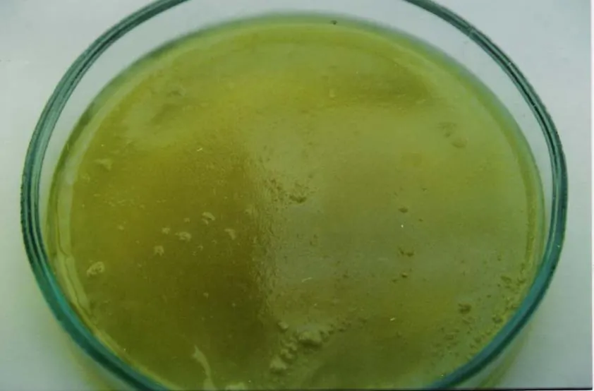
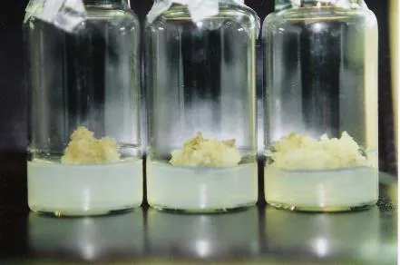

01Мета і план
Мета
Отримати клітинні колонії тютюну (Nicotiana tabacum L.), стійкі до антибіотика стрептоміцину: висіяти суспензію на селективне середовище, виявити стійкі колонії за зеленим забарвленням і перевірити стабільність стійкості.
Обладнання й матеріали
- ламінар-бокс, стерильні піпетки;
- чашки Петрі з селективним середовищем МС + ІОК + БАП + стрептоміцин 0,5 мг/мл;
- клітинна суспензія з мезофілу листків тютюну;
- термостат (25–26 °C), культуральна кімната.
Ви дізнаєтеся
- чим пряма селекція відрізняється від непрямої, тотальної й візуальної;
- скільки клітин треба висіяти, щоб знайти рідкісного мутанта;
- що таке сублетальна концентрація;
- як відрізнити генетичну стійкість від тимчасової адаптації.
02Теоретичні відомості
Навіщо селекція на рівні клітин
Культура клітин дає нетрадиційний шлях селекції: замість тисяч рослин у полі переглядають мільйони клітин у кількох чашках Петрі. Вихідним матеріалом для мутагенезу (штучного викликання мутацій — спадкових змін ДНК) і відбору можуть бути калюсні й суспензійні культури, ізольовані протопласти (клітини без стінки), соматичні або андрогенні (з пиляків) ембріоїди, сегменти листків і меристем. Клітинна селекція дає змогу у 2–4 рази прискорити створення нових форм рослин порівняно з традиційними методами.
Так отримано рослини пшениці, рису й картоплі, стійкі до хлоридного засолення (NaCl); рослини-регенеранти моркви, які завдяки аналогам амінокислот у селективному середовищі синтезують у 20 разів більше метіоніну, у 30 разів — триптофану, у 5 разів — лізину; картоплю, стійку до кільцевої гнилі. Культивуванням зародків із насіння на селективних середовищах отримано ячмінь, стійкий до аналогів амінокислот, а обробка пагонів і черешків картоплі мутагеном дала хлорофілдефектні й антибіотикостійкі химерні мутанти. Для деревних порід такі роботи поки поодинокі й пошукові.
Способи відбору мутантів
| Спосіб | Принцип | Приклад |
|---|---|---|
| Пряма (позитивна) | виживають і ростуть лише мутантні клітини певного типу | стійкість до гербіцидів, антибіотиків, токсинів, важких металів, солей, антиметаболітів (речовин-«двійників» метаболітів) |
| Непряма (негативна) | вибірково гинуть клітини дикого типу, що діляться; виживають метаболічно неактивні, тож мутацію в них треба окремо ідентифікувати | відбір ауксотрофів (мутантів, що потребують додаткової речовини) |
| Тотальна | індивідуально тестують усі клітинні клони | пошук змін у складі білків, вторинних метаболітів |
| Візуальна й неселективна | варіантну лінію видно серед популяції неозброєним оком чи за біохімічним аналізом | зелені колонії серед білих (ЛР 23), пігментовані лінії |
Найширше застосовують пряму селекцію — головно для отримання рослин-регенерантів, стійких до несприятливих чинників.
Об'єкт селекції: калюс, суспензія чи протопласти
Вибір об'єкта залежить від того, чи розроблено для виду технології культивування, і від мети. Найдоступніший — калюс (первинний або перепасований — пересаджений, що не втратив здатності до регенерації). Проте він має суттєві недоліки: повільно росте, селективний агент діє на його клітини неоднаково (зовнішні отримують більшу дозу, ніж внутрішні), а з пасажами калюс втрачає регенераційну здатність. Тому селекцію доцільно вести на рівні одиночних клітин — у суспензії чи протопластах: кожна колонія тоді є клоном (нащадками однієї клітини), і мутант не «розбавлений» нормальними клітинами. Для багатьох видів такі технології ще не розроблено, і калюс лишається єдиним варіантом.




Принцип ЛР 23: зелене серед білого
Стрептоміцин — антибіотик-аміноглікозид, що зв'язується з малою субодиницею бактеріального типу рибосом. Такі рибосоми є в пластидах (органелах із власною ДНК, з яких розвиваються хлоропласти). У чутливих клітинах білки хлоропластів не синтезуються, тож калюс не зеленіє, але на середовищі із сахарозою продовжує рости гетеротрофно. Клітини з мутацією в пластидному гені рибосомної РНК чи рибосомного білка стрептоміцин не зупиняє — їхні ділянки калюсу зелені. Такі мутації належать до цитоплазматичних (позаядерних, успадковуються по материнській лінії), і відбір за здатністю до фотосинтезу на селективному середовищі — один з найефективніших способів їх виявлення.
Оскільки в клітині десятки пластид, мутантні й нормальні можуть співіснувати (гетероплазмія). Тоді з колонії виростає химера — тканина із зеленими й білими секторами. Щоб уникнути химерних рослин, зелені ділянки регенерують на середовищі без антибіотика, але підтримують на середовищі з ним (с. 96).
Скільки треба висіяти: трохи статистики
Мутанти рідкісні, тож їх кількість на чашці підпорядковується розподілу Пуассона (закону рідкісних подій). Якщо висіяно об'єм V суспензії з густиною n клітин/мл, а колонію дає лише частка клітин — ефективність висіву PE (від англ. plating efficiency), то
Nкол — колоній на чашку; f — частота стійких клітин; λ — очікуване число стійких колоній на чашку. Імовірність знайти хоча б одну стійку колонію в серії з k чашок і потрібна кількість чашок для 95 % певності:
Приклад: 5·104 клітин/мл × 1 мл × PE 5 % = 2500 колоній; за f = 10−4 λ = 0,25, і для 95 % певності потрібно ≈ 12 чашок. Посібник числових значень PE і f не наводить — у моделі це припущення порядку величини (PE залежить від густини: за малої густини клітини погано діляться). Частка хлорофілу в колонії залежно від концентрації антибіотика C описана рівнянням Гілла G = 1/(1 + (C/IC50)h), де IC50 — концентрація напівпригнічення.
Сублетальна концентрація
Для токсичних селективних агентів (солей, гербіцидів, токсинів) спершу визначають сублетальну концентрацію — таку, за якої калюс ще росте, але частина калюсних колоній гине. Саме вона оптимальна для подальшої селекції: замала концентрація не створює тиску відбору, летальна вбиває й потенційних мутантів. У моделі сублетальну зону визначено як виживання колоній 20–80 % за росту тих, що вижили, не менше 40 % від контролю.
Перевірка стабільності стійкості
Колонії, що вперше виросли на селективному середовищі, можуть бути наслідком фізіологічної адаптації (тимчасового пристосування без зміни генів) чи певного стану диференціації клітин і бути генетично нестійкими. Тому одержання стабільних ліній — тривалий процес (с. 94):
У моделі Б кожен із 48 калюсів може бути чутливим, фізіологічно адаптованим (у 1,6 раза стійкішим, але щопасажу без агента з імовірністю 0,6 втрачає адаптацію) чи генетично стійким (у 2,2 раза стійкішим, стабільно). Виживання колоній задано рівнянням Гілла S(c) = 1/(1 + (c/150 мМ)4). Числа — ілюстративні, а не з посібника. Порівняйте пряму селекцію (одразу повна концентрація) і ступінчасту (концентрацію підвищують поступово).
Речовина в середовищі, що пригнічує звичайні клітини, але не мутантні (антибіотик, сіль, гербіцид, токсин).
Клітина чи організм зі спадковою зміною ДНК.
Нащадки однієї клітини; колонія з одиночної клітини — клон.
Частка висіяних клітин, що утворили колонії.
Концентрація агента, за якої калюс росте, а частина колоній гине.
Тканина чи рослина з генетично різних клітин, напр. зелені й білі сектори.
Зміни ДНК пластид чи мітохондрій; успадковуються по материнській лінії.
Тимчасова стійкість без зміни генів; зникає, коли агент прибирають.
03Інтерактивна модель
Модель А — висів суспензії й відбір за кольором (ЛР 23, формули (1)–(2)). Модель Б — вибір сублетальної концентрації й перевірка стабільності (схема). «▶ Запустити» прокручує культивування в прискореному часі.
Селекція стрептоміцин-стійких колоній тютюну
1 мл суспензії на чашку; 28 діб у термостаті в темряві — колонії білі; на світлі стійкі зеленіють. Торкніться малої чашки, щоб розглянути її.
Варіант досліду
Параметри
Доза — ефект: хлорофіл і ріст колоній
Скільки чашок висіяти, формула (2)
Наближення моделі: PE = 0,06·n/(n + 10⁴); IC50 хлорофілу 0,02 мг/мл для чутливих і 5 мг/мл для стійких; ріст колоній гальмується лише при IC50 = 4 мг/мл (за посібником, стрептоміцин ріст не пригнічує); діаметр колонії — логістична функція з максимумом 3 мм; 30 % стійких колоній — химерні. Перенесення на світло з 28-ї доби — припущення (посібник вказує темряву для утворення калюсу, а зелений колір виявляють пізніше). Кількість колоній і стійких на кожній чашці розігрується за Пуассоном.
Сублетальна концентрація і стабільність стійких ліній
48 калюсів (4 чашки × 12) проходять пасажі на середовищі з NaCl, без NaCl і знову з NaCl. Живі калюси ростуть, загиблі буріють.
генетично стійкийфізіологічно адаптованийчутливий
Схема селекції
Ступінчаста: 50 % → 75 % → 100 % концентрації.
Параметри
Пошук сублетальної концентрації
Склад клонів по пасажах (очікувані значення)
NaCl обрано як приклад токсичного агента (у посібнику — отримання стійких до хлоридного засолення пшениці, рису, картоплі). Для стрептоміцину, який ріст не гальмує, критерієм служить не виживання, а позеленіння (модель А). Параметри моделі Б — ілюстративні.
04Хід лабораторної роботи
Робота 23. Селекція мутантів на рівні клітинних колоній. Висів суспензії на селективне живильне середовище с. 95–96
Мета: отримати клітинні колонії, стійкі до антибіотиків. Матеріали й обладнання: ламінар-бокс, стерильні піпетки, чашки Петрі з селективним середовищем, клітинні суспензії тютюну.
- Відберіть 1 мл клітинної суспензії, отриманої з мезофілу (основної тканини) листків тютюну, і висійте на середовище: макросолі МС 100 мл, мікросолі МС 1 мл, Fe-хелат 5 мл, вітаміни МС 1 мл, ІОК 2 мг, БАП 0,5 мг, стрептоміцин 0,5 мг/мл, агар 8 г, сахароза 20 г (на 1 л), pH 5,0–5,5. Густину суспензії заздалегідь визначте в камері Фукса — Розенталя (тема 3).
- Чашки Петрі з висіяною суспензією поставте в термостат для утворення калюсної тканини: 25–26 °C, абсолютна темрява.
- Стрептоміцин інгібує позеленіння калюсу, але не пригнічує його ріст: ділянки з мутантними клітинами виявляйте за зеленим забарвленням (модель А).
- Для перевірки стійкості відокремте зелені ділянки й розмножте на середовищі того самого складу.
- Регенерацію зелених осередків до цілих рослин проводьте на середовищі без антибіотика; щоб запобігти утворенню химерних рослин, їх доцільно підтримувати на середовищі з антибіотиком.
- Спостерігайте кожні 7 діб і зробіть висновки (модель Б — перевірка стабільності).
05Контрольні питання
Які прийоми відбору мутантів використовують у культурі клітин?
Чому селекцію краще вести на одиночних клітинах, а не на калюсі?
Чому в ЛР 23 стійкі колонії зелені, а чутливі білі, хоча ростуть і ті, й інші?
Що таке сублетальна концентрація і навіщо її визначають?
Як відрізнити генетичну стійкість від фізіологічної адаптації?
Скільки чашок потрібно, якщо очікується 0,1 стійкої колонії на чашку?
Навіщо зелені ділянки тримати на середовищі з антибіотиком?
06Література
- Мельничук, М. Д., & Кляченко, О. Л. (2014). Біотехнологія в агросфері: навчальний посібник (с. 93–96). НУБіП України.
- Maliga, P., Sz.-Breznovits, Á., & Márton, L. (1973). Streptomycin-resistant plants from callus culture of haploid tobacco. Nature New Biology, 244, 29–30. https://doi.org/10.1038/newbio244029a0
- Larkin, P. J., & Scowcroft, W. R. (1981). Somaclonal variation — a novel source of variability from cell cultures for plant improvement. Theoretical and Applied Genetics, 60(4), 197–214. https://doi.org/10.1007/BF02342540
- Murashige, T., & Skoog, F. (1962). A revised medium for rapid growth and bio assays with tobacco tissue cultures. Physiologia Plantarum, 15(3), 473–497. https://doi.org/10.1111/j.1399-3054.1962.tb08052.x